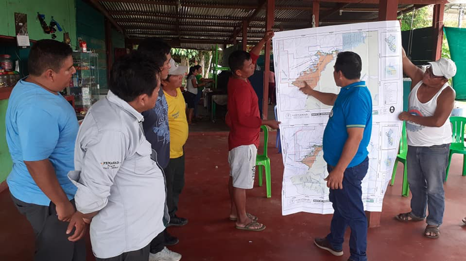

Participatory Zoning Goals
Participatory zoning processes like the one we re-enacted are underway in scores of protected areas in the tropics where biodiversity overlaps with poverty and management institutions are weak and underfunded. Ideally, participatory zoning balances ecosystem conservation and economic development goals across large areas and among diverse stakeholders. Buffer or multiple-use zones can soften the line between preserving biodiversity and extracting resources. Community mapping can bolster traditional resource use claims. Zoning can also highlight areas of special importance for protecting water and wildlife.
So, in sum, why do we go through all the effort to engage stakeholders and do participatory zoning?
- To balance conservation and development goals at the landscape scale.
- To bring competing interest groups together to negotiate rules and create a shared sense of landscape.
- To encourage greater stakeholder buy-in and avoid costly top-down enforcement.
What happened in Tambopata in real life?
Participatory zoning has been underway in one form or another in Tambopata for nearly two decades. Some past participatory zoning efforts have focused on agricultural development or mining outside protected areas. Our re-enactment matches an effort launched in 2001 that was funded by the Conservation and Sustainable Development program of the Macarthur Foundation and led by Peruvian conservationists. In reality, more than a dozen zoning maps were proposed by various stakeholder groups over the course of years. We selected and simplified four of these proposed maps to use in this exercise.
Given that this exercise was funded and led by conservationists, groups considered ‘forest friendly’ were privileged from the start, namely Brazil nut harvesters, ecotourism operators, ecologists, the Federation of Indigenous peoples (FENAMAD), and the Agrarian Federation (FADEMAD). However, the latter group (FADEMAD, the Agrarian Federation) was relatively large and powerful and its members included some miners and loggers. Thus, after several round tables and debates, participants chose proposal #2, a map originally proposed by FADEMAD. This map was thought to best balance competing interests. Notably, in place of the buffer zone, the zoning participants favored creating a new zoning category (a ‘Community Reserve’) that allowed all kinds of activities, but only if they were conducted by Tambopata residents. As a concession, miners were allocated the gold-rich riverbanks along the Malinowski in the NW section of the Reserve.

This consensus map was sent for approval to the central offices of Peru’s Institute of Natural Resources (INRENA) in Lima, where it sat for over a year undergoing adjustments and formal approval. When INRENA finally sent the formally approved zoning map back to Tambopata, stakeholders were met with a surprise: INRENA designated a large Buffer Zone, arguing that ‘Community Reserve’ was not a legally recognized land use zone. INRENA also erased the direct use zone along the Malinowski river meant for mining, hoping this would protect the source of water for the growing city of Puerto Maldonado from mercury contamination.
Local reaction to the final, INRENA-approved map was mixed. Indigenous people were disappointed but not surprised that their ancestral lands were not expanded. Some Ese’eja citizens were pleased to see ecotourism granted big areas, other Ese’eja opposed this. Brazil nut harvesters were pleased with the formal public support of their activity. The zoning exercise made them feel more confident in their rights and ability to exclude loggers and farmers from the old growth forest where they harvest Brazil nuts. Most participants believed mining on the Malinowski would not stop even if it was forbidden on the zoning map. Similarly, many participants felt the Buffer Zone was only a designation on paper, not one that would be enforced in reality.
Questions to reflect on:
- Do you think your character would approve of the final zoning map?
- Would s/h/ze describe the process as truly ‘participatory’?
- Stepping out of character, do you think Peruvian conservationists leading this exercise made the right choice to limit the voice of mining, industrial agriculture and logging in the zoning process?
- Based on your experience in this activity, in a sentence or two, describe a few opportunities and challenges to taking a participatory approach to zoning.
The mixed results of Participatory Zoning at Tambopata
Did the participatory zoning exercise succeed at balancing conservation & development at the landscape scale?
Failures: Despite the zoning effort, some ‘cut and run’ logging is still underway in the northeastern corner of the TNR and neighboring indigenous territories. Worse, as expected, illegal gold mining activities exploded in the Buffer Zone and along the upper Malinowski River. In 2018 alone, mining destroyed over 9,000 hectares of forests (that’s about 18,000 football fields).
The Monitoring of the Andean Amazon Project (MAAP) has put together time lapse images that show how gold mining (and related deforestation) has rapidly expanded in the Alto Malinowski and La Pampa (and other regions) between 2016-early 2019. Click here to see them (scroll down to La Pampa, and the Alto Malinowski).